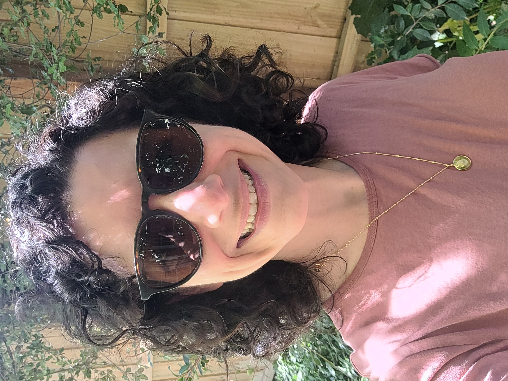

You're on the Waitlist.
Closer to Maths Week, you'll get the full details, including access to the Passes. In the meantime, I'd also love to know:
→ What's most likely to get in the way of running Maths Week the way you'd like?
- A. Finding time in a packed term
- B. Getting other teachers on board
- C. Adapting activities for my students
- D. Confidence with the maths content
- E. Tech or logistics at my school
- F. Something else — tell me in your reply
You can reply to my email with the letter(s) + any further relevant info.
(This will help me better help you.)
Cheers!
Michaela Epstein
Director, Maths Week Australia
